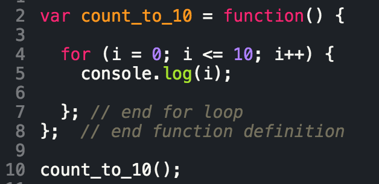
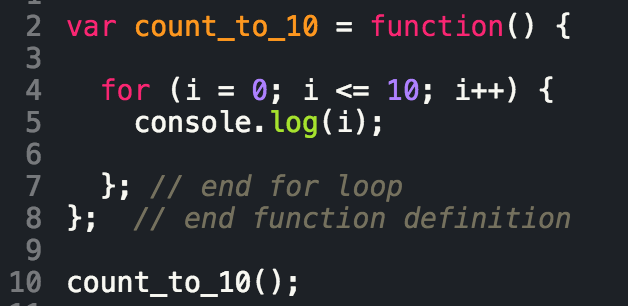
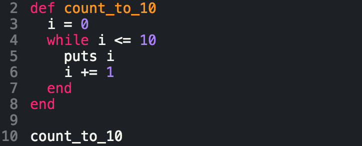
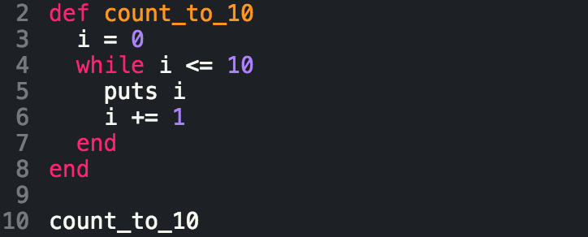

Javascript vs. Ruby
What is the difference between the two? Well, not much, but also a lot. You see, you can do pretty much all the same things with both languages and the method/function names are pretty similar...but the syntax is just different enough to throw you off. In my mind Ruby syntax is easier than Javascript, but I'll let you be the judge.
Javascript


Ruby


Take a look at the code above. What differences do you see? If you're like me, you notice that the parentheses, semicolons, and brackets make the javascript more intimidating. The simplicity of Ruby makes it clear why it's often the first script people learn. Check out some of the resources below that outline in more detail the differences between the languages.
Resources for learning
AgentCooper: Ruby vs. JavascriptFlatiron School:Javascript vs. Ruby